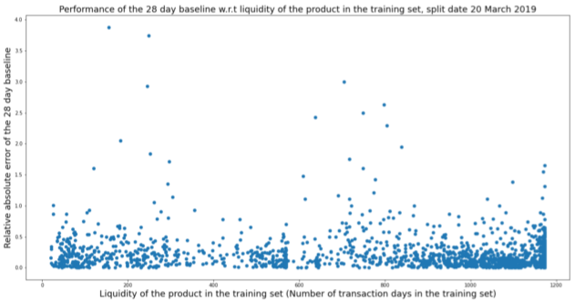
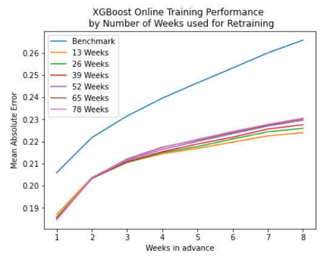
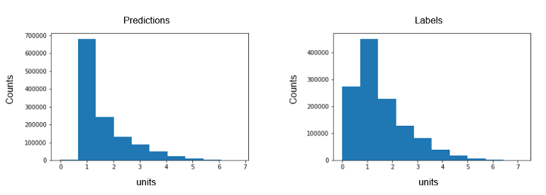

Forecasting
Misc
Also see
For model selection, Hyndman recommends all subsets if feasible. If not, then backwards-stepwise. If there are still to many predictors for backwards-stepwise, start with a subset of predictors you’re confident in and use forward-stepwise
Loss Functions/Error Metrics
- If you care about errors measured in percent (i.e. “relative”) and your data are strictly positive, then “relative” metrics such as the MALE and RMSLE or MAPE and sMAPE are also in this class of metrics but have issues (See Loss Functions)
- If you care about errors measured in real units (e.g. number of apples), or your data can be zero or negative, then “raw” metrics such as MAE or MSE are more appropriate.
- MAE and RMSE are scale-dependent, so they can only be used to compare models on 1 series or on multiple series if they have the same units. MAE will lead to forecasts of the median, while minimizing the RMSE will lead to forecasts of the mean
- Also see Loss Functions >> Misc >> re Stochastic Gradient Descent in ML/DL models
- If you want to compare or aggregate performance metrics across time series, then you might want to use scaled metrics such as MASE, MASLE
- Using MASLE will require your data are strictly positive
Error Components
Scale-Dependent Base Error - A measurement of the difference between the forcast and the observed. It’s scale-dependent because the larger the magnitude of the time series, the larger the error.
Positive Transform - You don’t want negative error values to cancel out the positive error values, so want them all to be positive. A square or absolute value is typically used.
- Squared positive transforms optimize on the mean and absolute value positive transfomrs optimize on the median
Summary Operator - A method for aggregating the errors (e.g. mean, weighted mean, median, geometric mean, etc.)
Example: MAE
\[ \text{MAE} = \mbox{mean}(|e_t|) \]- \(e_t\): The residual is the scale-dependent base error
- \(|\quad |\): The absolute value is the positive transform
- \(\mbox{mean}\): The mean is the summary operator
Example: MAPE
\[ \text{MAPE} = \mbox{mean}\left ( \left | 100\frac{e_t}{y_t} \right | \right ) \]- \(100\frac{e_t}{y_t}\): scale-dependent base error
- \(| \quad |\): positive transform
- \(\mbox{mean}\): summary operator
Considerations when choosing a metric
- Use Case: If it’s for a report, you’ll want something more interpretable than if it’s just for modeling.
- Scale
- For products, you care more about the forecasting error of big ticket or large sales volume items than for less expensive or smaller sales volume items.
- If you’re forecasting temperature, then scale is irrelevant.
- Over/Under-Forecasting
- Should either have a greater penalty than the other?
- Time Series Properties
- Outliers, Intermittency, Level Shifts, etc.
- Comparable across scales
- Do we forecast furniture sales better than t-shirts?
Averaging vs. Pooling Errors
- If you’re using one model to forecast multiple related series, then in order to compare model performance for model selection, you’ll need to either pool or average the forecasting errors across series for each model.
- Averaging
\[ \overline{\text{RMSE}} = \frac{1}{M} \sum_{i = 1}^M \text{RMSE}_i \]- The average of the RMSE for each time series
- \(M\): The number of time series
- Pooling
\[ \text{RMSE}_{\text{pooled}} = \sqrt{\frac{1}{MH}\sum_{i=1}^M\sum_{t=1}^H (e_{t,i})^2} \]- \(M\): The number of time series
- \(H\): The forecast horizon
- Example
\[ \text{RMSE}_{\text{pooled}} = \sqrt{\frac{1}{2*3}(e_{1,1}^2 + e_{2,1}^2 + e_{3,1}^2 + e_{1,2}^2 + e_{2,2}^2 + e_{3,2}^2)} \]- \(M=2\) means two time series are forecasted by this model
- \(H=3\) means the forecast horizon is 3
How does the amount of data affect prediction
- Could be useful for choosing a training window for production
- Example: Relative Absolute Error vs number of rows in the training set
- Interpretation: No pattern?
- Might’ve been useful to only look at the values from 0.5. Looks like a lot more points a cluster at data sizes between 1000 and 1200 rows.
- Interpretation: No pattern?
- Example: MAE vs prediction horizon (colored by the number of weeks of data in training set)
- Interpretation for this data and model: For prediction horizons greater than a couple weeks, having mored data in the training set leads to worse performance
Does the model predict values close to zero
- “Labels” are the observed values
- Bad performance with values close to zero can be the result of the loss function used where lower losses are not penalized as much as higher losses
Spectral analysis takes the approach of specifying a time series as a function of trigonometric components (i.e. Regression with fourier terms)
- A smoothed version of the periodogram, called a spectral density, can also be constructed and is generally preferred to the periodogram.
Regressing non-stationary time series can lead to spurious regressions. High R2 and high residual autocorrelation can be signs of spurious regression. (See FPP 3, 7.3)
{kind=link}
{kind=link}
{kind=link}
GOF
Maximizing \(R^2_{\text{adj}}\) is okay for model and feature selection for regression models in the forecasting context as it does not increase as predictors are added. Although it does error on the side of selecting to many predictors. Other metrics are better suited for forecasting. (source)
\[ R^2_{\text{adj}} = 1 - (1-R)\frac{T-1}{T-k-1} \]
- \(R\) is the unadjusted value, \(T\) is the number of observations, and \(k\) is the number of predictors.
- Equivalent to minimizing the residual standard error
AIC~c
~\[ \begin{align} &\text{AIC}_c = AIC + \frac{2(k+2)(k+3)}{T-k-3}\\ &\text{where}\;\; \text{AIC}= T\log\left(\frac{\text{SSE}}{T}\right) + 2(k+2) \end{align} \]- \(T\) is the number of observations, and \(k\) is the number of predictors.
- Smaller is better
- Recommended by Hyndman
BIC
\[ \text{BIC} = T\log\left(\frac{\text{SSE}}{T}\right) + (k+2)\log T \]- \(T\) is the number of observations, and \(k\) is the number of predictors.
- Smaller is better
CV (source)
\[ \text{CV} = \frac{1}{T}\sum_{t=1}^T \left(\frac{e_t}{1-h_t}\right)^2 \]- Shortcut calculation of the cross-validation MSE error for regression models in forecasting
- \(T\) is the number of observations
- \(e_t\) are the residuals from fitting a model with all T observations
- \(h_t\) are the diagonal values of the Hat matrix.
- Smaller is better
- Recommended by Hyndman
Residuals
Notes from
Innovation Residuals - If the outcome variable has been transformed (e.g. log), then these are the residuals on the transformed scale. If there was no transformation, then the (regression) residuals equal the innovation residuals.
- Useful in checking whether a model has adequately captured the information in the data.
- If patterns are observable in the innovation residuals, the model can probably be improved
Assumptions
- The innovation residuals are uncorrelated. If there are correlations between innovation residuals, then there is information left in the residuals which should be used in computing forecasts.
- The innovation residuals have zero mean. If they have a mean other than zero, then the forecasts are biased.
- The innovation residuals have constant variance. This is known as “homoscedasticity”.
- The innovation residuals are normally distributed.
Sometimes applying a Box-Cox transformation may assist with these properties, but otherwise there is usually little that you can do to ensure that your innovation residuals have constant variance and a normal distribution.
When a normal distribution for the residuals is an unreasonable assumption, one alternative is to use bootstrapping, which only assumes that the residuals are uncorrelated with constant variance.
If Predictor vs Residual scatterplots show a pattern, then the relationship may be nonlinear and the model will need to be modified accordingly.
If the Fitted vs Residuals scatterplot shows a pattern is observed, there may be “heteroscedasticity” in the errors which means that the variance of the residuals may not be constant. If this problem occurs, a transformation of the forecast variable such as a logarithm or square root may be required
Autocorrelation tests
- Failing the test does not necessarily mean that (a) the model produces poor forecasts; or (b) that the prediction intervals are inaccurate. It suggests that there is a little more information in the data than is captured in the model. But it might not matter much.
- Breusch-Godfrey test designed for pure regression or straight AR model
- Does handle models with lagged dependent vars as predictors
- LM (lagrange multiplier) test
forecast::checkresidualscan calculate it and display it, but you don’t have access to the values programmatically- Defaults for lag is \(\min(10,n/5)\) for nonseasonal and \(\min(2m, n/5)\) for seasonal where the frequency is seasonality, m
r lag <- ifelse(freq > 1, 2 * freq, 10) lag <- min(lag, round(length(residuals)/5)) lag <- max(df+3, lag)
- Defaults for lag is \(\min(10,n/5)\) for nonseasonal and \(\min(2m, n/5)\) for seasonal where the frequency is seasonality, m
- {lmtest} and {DescTools} (active) packages have the function that forecast uses but only takes
lmobjects
- Durbin-Watson designed for pure regression
- Error term can’t be correlated with predictor to use this test
- So no lagged dependent variables can be used as predictors
- There is an durbin alternate test mentioned in stata literature that can do lagged variables but I haven’t seen a R version that specifies that’s the version it is.
- {lmtest} and {DescTools} takes a
lmobject and has a small sample size correction available - {car::durbinWatsonTest} takes a
lmobject or residual vector.- Only
lmreturns p-value. Residual vector returns DW statistic
- Only
- p-values \(\lt 0.05\) \(\rightarrow\) Autocorrelation present
- DW statistic guide (\(0 \lt \text{DW} \lt 4\))
- Around 2 \(\rightarrow\) No Autocorrelation
- Signifcantly \(\lt 2\) \(\rightarrow\) Positive Correlation
- Saw values \(\lt 1\) have p-values = 0
- Significantly \(\gt 2\) \(\rightarrow\) Negative Correlation
- Error term can’t be correlated with predictor to use this test
- Ljung-Box
- For dynamic regression, arima, ets, etc.
- There’s a SO post that shows this shouldn’t be used for straight regression
- For straight AR models, the comments show it should be fine as long as lags \(\gt\) model [df]{arg-text} (see below)
- There’s a SO post that shows this shouldn’t be used for straight regression
- Test is whether a group of lagged residuals has significant autocorrelation, so an acf of the residuals might show individual spikes but the group as a whole may not have significant autocorrelation
- If you see a spike in the residuals, may be interesting to include that lag number in the group of lags and see if significance of the group changes
- {feasts::ljung_box}
- Requires numeric residuals vector, model degrees of freedom, number of lags to check
- The model df is number of variables used in the regression + intercept + p + q (of ARIMA error model)
- e.g. Model with predictors: trend + cases and an error model: arima (2,1,1) had df = 2 (predictors: trend, cases) + 1 (intercept) + 2 (p) + 1 (q) = 6 d.f.
dof <- length(fit$coef)
- See Breusch-Godfrey section for number of lags to use
- The model df is number of variables used in the regression + intercept + p + q (of ARIMA error model)
- Requires numeric residuals vector, model degrees of freedom, number of lags to check
- p-values \(\lt 0.05\) \(\rightarrow\) autocorrelation present
- For dynamic regression, arima, ets, etc.
-
fit_consMR <- us_change |> model(tslm = TSLM(Consumption ~ Income + Production + Unemployment + Savings)) fit_consMR |> gg_tsresiduals() augment(fit_consMR) |> features(.innov, ljung_box, lag = 10) #> # A tibble: 1 × 3 #> .model lb_stat lb_pvalue #> <chr> <dbl> <dbl> #> 1 tslm 18.9 0.0420- The time plot shows some changing variation over time, but is otherwise relatively unremarkable. This heteroscedasticity will potentially make the prediction interval coverage inaccurate.
- The autocorrelation plot shows a significant spike at lag 7, and a significant Ljung-Box test at the 5% level. However, the autocorrelation is not particularly large, and at lag 7 it is unlikely to have any noticeable impact on the forecasts or the prediction intervals.
- The histogram shows that the residuals seem to be slightly skewed, which may also affect the coverage probability of the prediction intervals.
{kind=link}
Probabilistic
- Continuous Ranked Probability Score (CRPS)
fabletools::accuracy- Measures forecast distribution accuracy
- Combines a MAE score with the spread of simulated point forecasts
- See notebook (pg 172)
- Winkler Score
fabletools::accuracy- Measures how well a forecast is covered by the prediction intervals (PI)
- See notebook (pg 172)
Tests
- Diebold-Mariano
Tests whether two methods have the same forecast accuracy
Formula (source)
\[ \begin{aligned} &\text{DM} = \frac{\bar d}{\sqrt{\frac{\gamma_0 + 2 \sum_{k=1}^{h-1}\gamma_k}{n}}} \\ &\begin{aligned} \text{where} \quad \bar d &= \frac{1}{n} \sum_{i=1}^n d_i \\ \gamma_k &= \frac{1}{n} \sum_{i=k+1}^n (d_i - \bar d)(d_{i-k} - \bar d) \end{aligned} \end{aligned} \]
- \(d_i\): Loss Differential
- For MSE, \(d_i = r_{i, 1}^2 - r_{i, 2}^2\)
- For MAE, \(d_i = |r_{i, 1}| - |r_{i, 2}|\)
- Where \(r_{i,1}\) are the residuals of model 1 and \(r_{i,2}\) are the residuals for model 2
- \(\gamma_k\): Autocovariance at lag \(k\)
- Approximated using ACF or Bartlett weights
- \(d_i\): Loss Differential
Assumes \(\text{DM} \sim \mathcal{N}(0,1)\) for \(\mu = \mathbb{E}[d_i] = 0\) (i.e. loss-differential is stationary), so it’s a z-stat
- The DM statistic for the MASE has been empirically shown to approximate this distribution, while the mean relative absolute error (MRAE), MAPE and sMAPE do not. (wiki)
“Tends to reject the null hypothesis too often for small samples” (source). So Harvey, Leybourne and Newbold (1997) proposed a modified version
\[ DM_{\text{adj}} = \text{DM} \cdot \sqrt{\frac{n+1-2h+h(h-1)}{n}} \]
Example: {forecast} docs
# Test on out-of-sample one-step forecasts f1 <- ets(WWWusage[1:80]) f2 <- auto.arima(WWWusage[1:80]) f1.out <- ets(WWWusage[81:100], model = f1) #> Model is being refit with current smoothing parameters but initial states are being re-estimated. #> Set 'use.initial.values=TRUE' if you want to re-use existing initial values. f2.out <- Arima(WWWusage[81:100], model = f2) accuracy(f1.out) #> ME RMSE MAE MPE MAPE MASE ACF1 #> Training set 0.2100836 3.24835 2.570459 0.1203497 1.352355 0.4246845 0.2287215 accuracy(f2.out) #> ME RMSE MAE MPE MAPE MASE #> Training set 1.081679 3.329012 2.437119 0.6810673 1.375924 0.4026544 #> ACF1 #> Training set -0.004460367 dm.test(residuals(f1.out), residuals(f2.out), h = 1) #> #> Diebold-Mariano Test #> #> data: residuals(f1.out)residuals(f2.out) #> DM = -0.14392, Forecast horizon = 1, Loss function power = 2, p-value = #> 0.8871 #> alternative hypothesis: two.sided- Uses Harvey, Leybourne and Newbold (1997) proposed a modified version
- alternative=“less” - The alternative hypothesis is that method 2 is less accurate than method 1
- alternative=“greater” - The alternative hypothesis is that method 2 is more accurate than method 1
- alternative=“two.sided” (default) - The alternative hypothesis is that method 1 and method 2 have different levels of accuracy
- varestimator = “acf” (default) or “bartlett”: Autocovariance estimation
- Friedman and Neyeni Tests
- Packages
- {tsutils::nemenyi} - Perform nonparametric multiple comparisons, across columns, using the Friedman and the post-hoc Nemenyi tests.
- Friedman - Tests whether a difference between models exists
- Nemenyi - Pairwise tests to see which models differ from which after the Friedman tests’s Null has been rejected.
- Packages